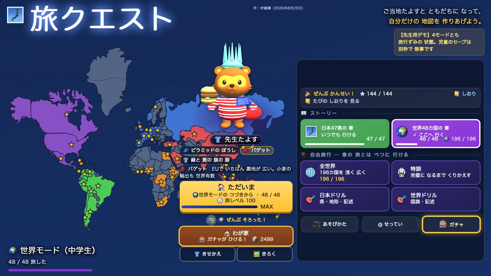
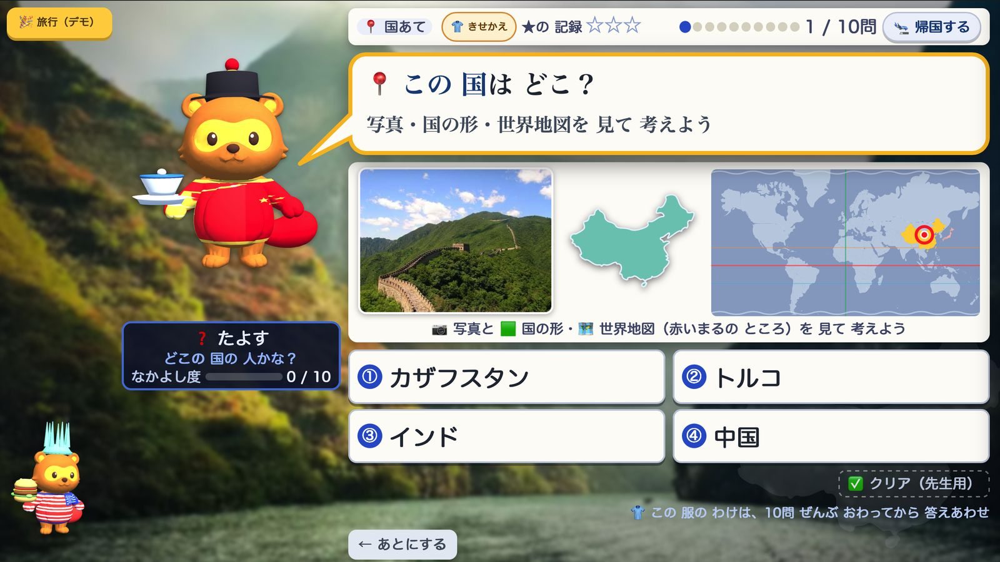
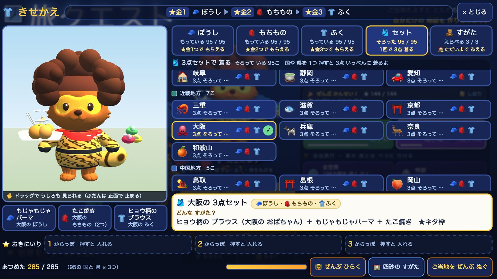
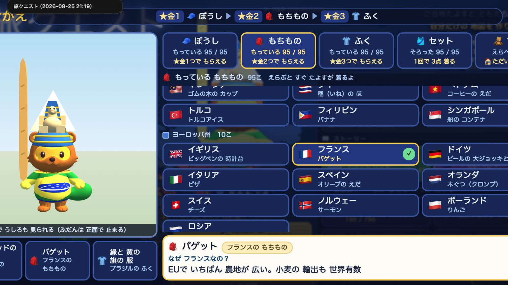
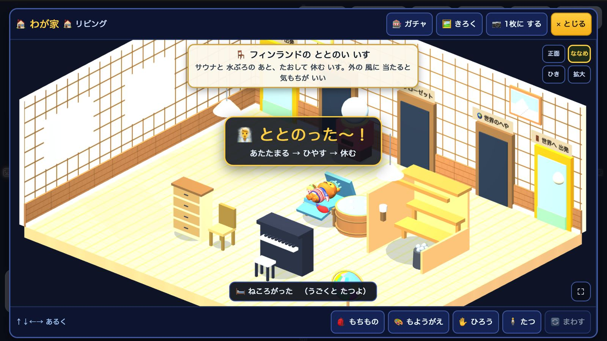
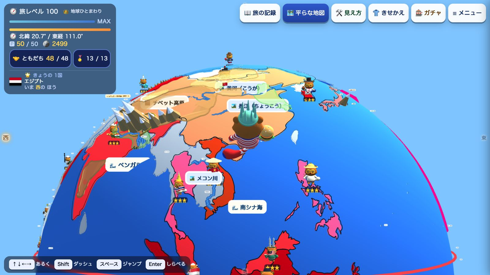
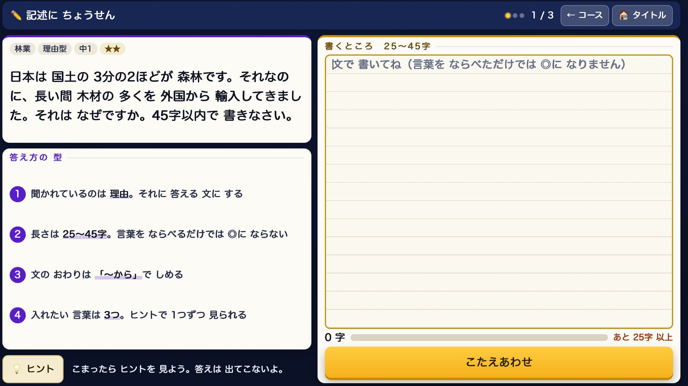

社会（地理）／ 小4〜中2
旅クエスト
単一HTML 83.6MB・47都道府県＋196カ国・写真1,708枚／サイト内の別名『地理クエスト』
白い地図は、うばわれたからではなく、まだ行っていないから白い。
この一行から作り直した地理教材です。
都道府県47
世界196カ国
日本の問題932問
写真1,708枚
Screens
Screens
画面
5つの入口を順に見ていきます。先生用のデモモード（URLの末尾に #demo）で開いているので、旅ずみの状態です。子どものきろくは1バイトも変わりません。



衣装の3部品
- かぶりもの自然・地形
- はおりものしごと・文化
- 持ちもの名物
地理の3つの見方と、そのまま重なります。



スライダー1本で、平面⇄球をなめらかに補間します
平面（メルカトル）グリーンランドがアフリカ大に見える
球実際の面積に縮む。高緯度は「地図より遠い」

What it aims for
Aim
見込める効果
- 5つの入口が、それぞれちがう力を育てます
- ① 問題本編（4択）→知識をひととおり入れる
- ② きせかえ→文化を、着て覚える
- ③ 模様がえ→集めたものを、飾って結びつける
- ④ 地球球体モード→位置・距離・地形の感覚
- ⑤ 記述問題→自分の言葉で説明する力
- ① 問題本編やり直しの単位を「県まるごと」から「まちがえた1問だけ」へ実測（モンテカルロ）で、能力による所要時間の差が5.0倍→1.35倍に。正答率70%の子の3周目の学習密度は11%→70%になります。
- ④ 球体モード平面の地図では絶対に身につかないものが、歩くだけで入る「高緯度は思ったより遠い」「大陸は思ったより大きい」。
- 知らない国は、こわい国になる。知っている国は、ともだちの国になる世界モードの芯です。戦争・経済格差・SDGsという語は画面に1回も出さず、構造だけで伝えます（196人が全員たよす／白＝まだ会っていない・色＝ともだち）。
- 出発点は、児童の言葉でした「何をしたら終わるのか、どのくらいでクリアなのかがわからない。だからあんまりやらない」── ここから「見通し」を設計の柱にしました。
- 連続◯日ボーナス・通知・ノルマは、1つもありません「来た人が得する」だけにして、「来ないと損する」は作らないと決めました。
Design decisions
Design
工夫したこと
判断の記録です。やめたもの・ひっくり返したものを中心に書きます。
- 3回ひっくり返したガチャ一度は「残るのは回しつづける動線だけ＝学習アプリがいちばん持ってはいけないもの」と結論しました。引く装置演出0.8秒。子どもは解説を一度も読まなくなった立ち止まって読む装置先生の一言「説明を確認する時間を確保できる」で採用
- そこで引いた線 ──教科書の核は、1つも運の後ろに隠さない中身は必ず全員に届く／出る順番だけが運（全部やれば必ず揃う）／レア度は確率ではなく1問もまちがえずに通したかで作ります。
- 作り足したその県にしかない問題を、47県×6問＝282問以前は固有問題が世界194問に対して日本0問で、2県目で「さっきと同じ」と気づかれていました。点検は機械でやり、事故を2件つかまえました。
- 増やして、戻した1県あたりの問題数[4,4,8]→[6,6,10]に上げましたが、先生の「世界の4がちょうどいい」で戻しました。同じ目的の手を2回打っていたと分かったからです。
- 絵を持たない国旗は1カ国46バイト、おみやげは1品16バイトの「描き方」だけ動機は見た目ではなく収集の問題でした ──「絵文字141品のうち65%が使い回し。棚に並べると6つの焼きものが全部同じ壺になる」。
- 写真はWikimedia Commonsから。AI生成は不採用ライセンスを機械でふるい、候補5枚から目で選びます。実在の地形を教える教材に、生成画像は使えません。
- 記述式の数値は、すべて一次資料で裏取り気象庁・BOM・Eurostat・米国センサス・WITS・DFAT。裏が取れないものは差し替えています。
Why kids play
Fun
楽しさ
集めることと、飾ることです。
- ご当地たよす95体＋国旗たよす148体148体が地味だからこそ、民族衣装が光ります。196カ国ぜんぶに民族衣装を着せると、アジア12カ国が「ふつう」になります。
- あつめた285点、ぜんぶに「なぜここのものか」の一行おみやげ188品・衣装・家具まで。
- 「つながり」15セットが、最後の見せ場ばらばらに集めたものが地図の上で帯になります ── コーヒーベルト＝赤道の帯／花＝オランダ・ケニア・コロンビア（近いからでなく、飛行機で運べるから）。揃うまで見せません。
- ジムリーダー13体・39行のセリフ世界6州のセリフには国名を1つも書いていません ── パナマ運河は「くびれたほそいところ」、アマゾンは「よこにねた大きな川」。
- ちけいワープ14か所いちばん効く絵は「扇状地のまん中で青い川が消え、緑のふちでまた現れる」── 写真には絶対に写らないところです。
In the classroom
Use
授業での使い方
大前提から書きます。ここは正直に言っておかないといけないところです。
- 大前提主戦場は、家庭学習・自主学習です授業中に学級全員で使うことは、設計の最初から前提にしていません。これが「単元計画とのなじみが弱い」の根です。
- 1日の型 ── およそ4〜5分
- いってきます10秒
- きょうの1県3分30秒
- ただいま／箱を開ける30秒
- ガチャ20秒
10秒ルール／1日は1県でよい／やらない日があってよい。
- 導入 5分先生用の「完成した地図を見る」で、最後はこうなるを先に見せる児童の端末でそのまま使えて、きろくは変わりません。
- 教科書に合わせ直しています中学は帝国書院、日本の諸地域は7地方区分。ちけいワープは学年で用語を変え、小学生には理科の侵食・運搬・堆積で説明します（行ける場所も小学生8か所／中学生14か所）。
- 配布は単一HTML1ファイルインストール不要・ネット接続不要（機内モードでも最初から最後まで遊べます）。セーブは端末の中だけです。
Spec
Numbers
数字
2026年8月時点の実測値です。
| 本体 | 83,627,029 バイト＝83.63 MB（単一HTML）／スマホ版 54.33 MB |
|---|---|
| 対象 | 47都道府県／世界196カ国（うち深く旅する48カ国） |
| 問題数 | 日本932問（1県19.8問）／県固有282問／記述式99問／国旗196カ国 |
| 写真 | 1,708枚（Wikimedia Commons・ライセンスは機械でふるい、目で選定） |
| 収集 | おみやげ188品／ご当地たよす95体＋国旗たよす148体／ジムリーダー13体 |
| 3D | ちけいワープ14か所（0.095MB＝本体の+0.14%）／3Dモデルは衣装0体 |
| 写真のライセンス内訳 | PD・CC0 10.9%／CC BY 27.6%／CC BY-SA 61.5% |
| セーブ | localStorage の chirisuto_2026 1本（SAVE_V=3）・端末の中だけ |
正直に書いておくこと
- まだ子どもは使っていません。上の「見込める効果」はすべてねらいで、結果ではありません（2027年4月からの運用を予定）。
- 指導案がまだ0本です。第三者による客観評価でも、教育的価値の減点はこの1点だけでした。
- Chromebook実機での起動時間を、まだ測っていません。最後の実測は本体が22.8MBだった頃の6.87秒（CPU4倍遅の条件）で、いまは83.6MBです。
- 写真の61.5%が CC BY-SA です。校内で無償に配るならこのまま通りますが、有償にするなら差し替えが必要です。この1つの数字が、この教材の出口を決めています。